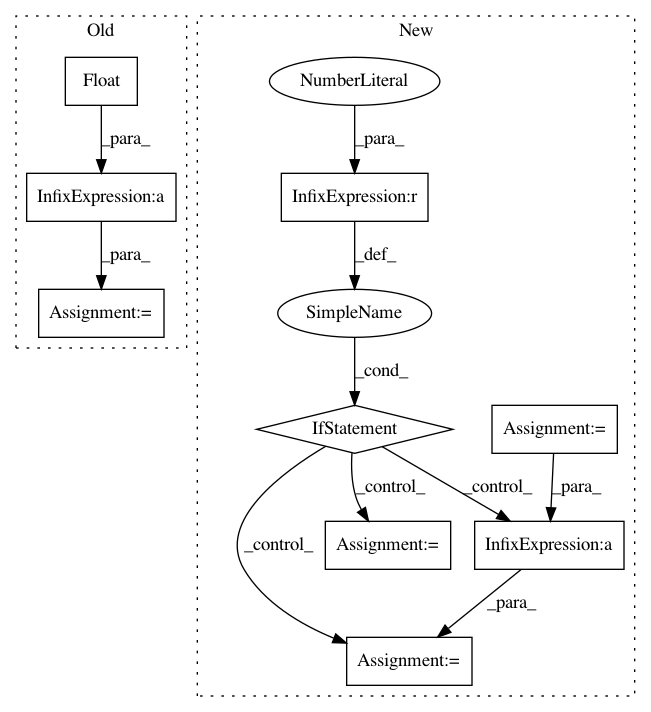

5601c4bb909b4146327fa68c6d5b668f997baaff,pyinterpret/data/dataset.py,DataSet,_build_metastore,#DataSet#Any#,125
Before Change
// dist_percentiles = map(lambda i: int(stats.percentileofscore(dists, i)), dists)
ranks = pd.Series(dists).rank().values
round_to = n_rows / float(bin_count)
rounder_func = lambda x: int(round_to * round(float(x) / round_to))
ranks_rounded = map(rounder_func, ranks)
ranks_rounded = np.array([round(x, 2) for x in ranks / ranks.max()])
return {
After Change
// the percentile distance of each datapoint to the global median
// dist_percentiles = map(lambda i: int(stats.percentileofscore(dists, i)), dists)
bins = np.linspace(0, 100, num=bin_count + 1)
unique_dists = np.unique(dists)
if len(unique_dists) > 1:
ranks_rounded = pd.qcut(dists, bins / 100, labels=False)
unique_ranks = np.unique(ranks_rounded)
else:
ranks_rounded = np.ones(n_rows)
unique_ranks = np.ones(1)
return {
"median": medians,
"dists": dists,
"n_rows": n_rows,
In pattern: SUPERPATTERN
Frequency: 3
Non-data size: 9
Instances
Project Name: datascienceinc/Skater
Commit Name: 5601c4bb909b4146327fa68c6d5b668f997baaff
Time: 2017-03-21
Author: aikramer2@gmail.com
File Name: pyinterpret/data/dataset.py
Class Name: DataSet
Method Name: _build_metastore
Project Name: pytorch/text
Commit Name: 812ddc9595195887b7574512bd1021743354b064
Time: 2019-08-02
Author: 6156351+zhangguanheng66@users.noreply.github.com
File Name: examples/text_classification/train.py
Class Name:
Method Name: train_and_valid
Project Name: cmu-db/ottertune
Commit Name: e5113f73f524b8358bd09b087796a806a0b3a313
Time: 2020-04-09
Author: dongshen@andrew.cmu.edu
File Name: server/website/website/db/oracle/target_objective.py
Class Name: NormalizedDBTime
Method Name: compute